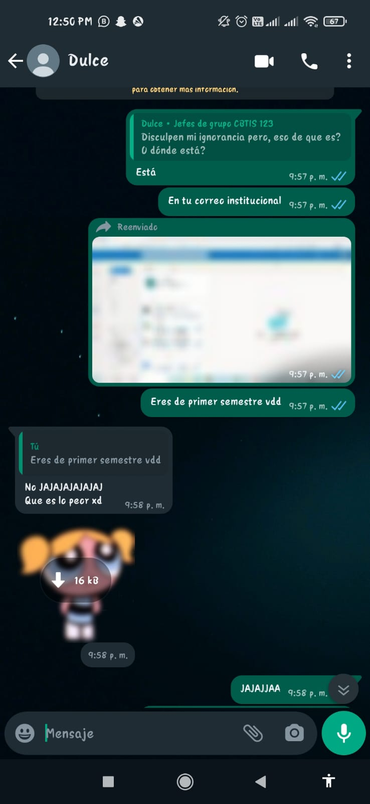
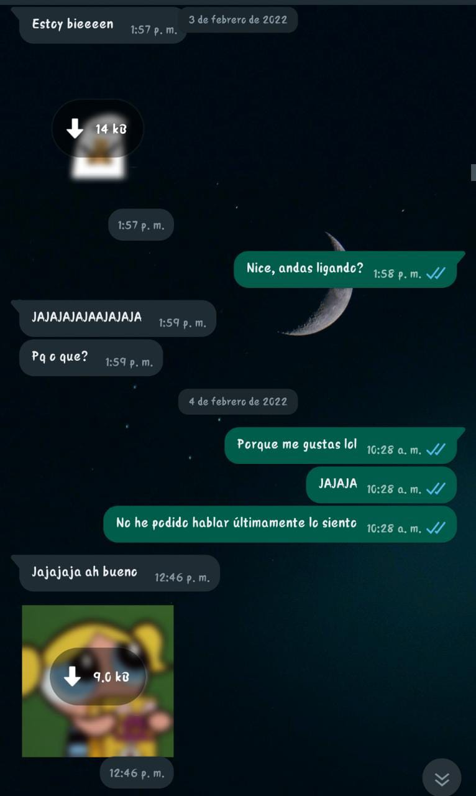
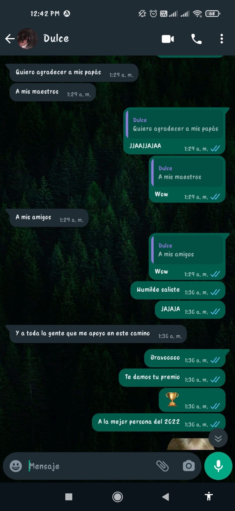

Todo empezó hace 1 año cuando nos conocimos gracias a el grupo de jefes de grupo de la escuela. Recuerdo que me llamó la atención el stiker que utilizaste, me pareciste muy divertida
Intente ayudarte como buena persona y como dicen, has buenas acciones y vendran cosas buenas hacia ti, pero nunca pense que vendria lo mas hermoso de este mundo consigo
Al principio solo éramos amigos, pero poco a poco fui enamorándome de ti. Me encantaba pasar tiempo contigo, hablar de cualquier cosa y reírnos juntos.
Finalmente, después de un par de meses, me armé de valor y te dije lo que sentia, que me gustabas, me da risa recordarlo porque te dije "porque me gustas lol"
Hemos pasado momentos increíbles juntos, como cuando hablamos en la noche por horas sobre cosas raras pero bonitas JAJAJAJ, donde te ganaste un premio sin igual
ha sido de los momentos que me ha demostrado que si ambos ponemos de nuestra parte, podria funcional muy bien, platicas amenas y bonitas surgieron durante este y el anterior año.
Recuerdo perfectamente año nuevo, tenia muchos nervios de felicitarte porque la verdad, queria olvidarte, no soportaba tener sentimientos atorados y queria sacarlos, tuve momentos de fustracion muy fuertes, pero cuando te felicite, me senti muy feliz y me di cuenta que era tonto luchar contra estos sentimientos, decidi, serte sinsero en todo momento y demostrarte que me importas mucho, realmente mucho.
Claro que también hemos tenido nuestros momentos difíciles, pero siempre hemos sabido cómo superarlos juntos. En definitiva, estoy agradecido por cada día que paso a tu lado y no puedo esperar a ver qué nos depara el futuro.
El primer te quiero, nunca se olvida, nunca lo olvido.
Gracias por mejorar conmigo